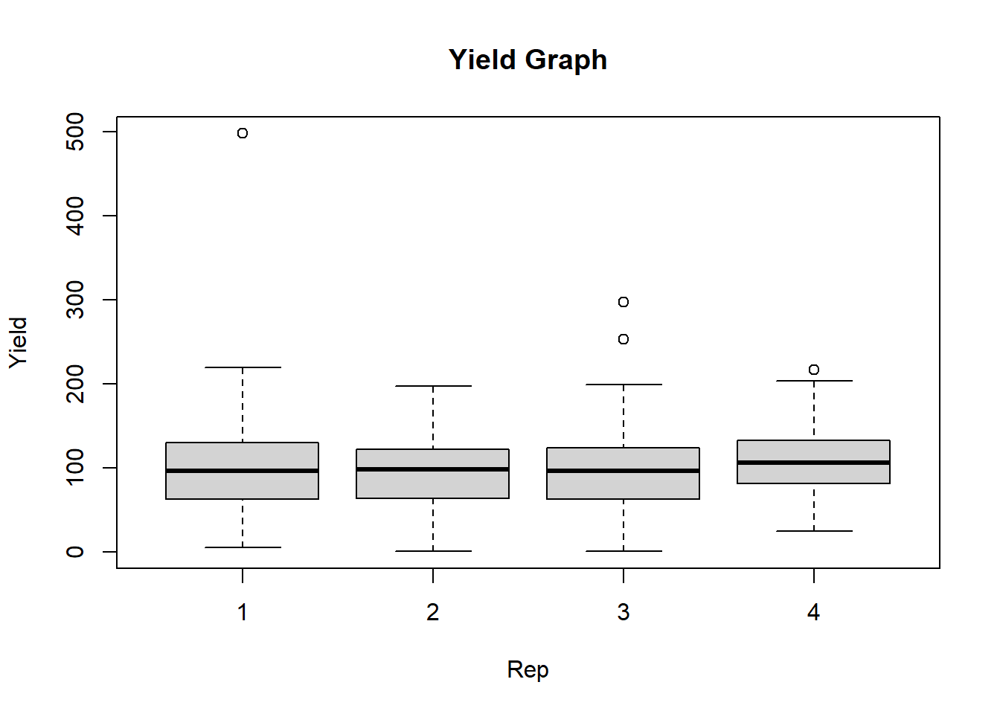

data1 <- read.csv("trial_data.csv")
head(data1, 5)
View(data1)Getting to Know Your Data in R
Learning Goals
At the end of this lesson, you should:
- How to import data in R
- know several methods of data exploration in R
- understand how to make cross tabulations of data
- know how to make histograms and pairwise plots in R
Import a csv data set
This code read_csv() reads a CSV file named “trial_data.csv” and assigns it to an object named “data1”.
The second line of code uses the “head” function to display the first 5 rows of the “data1” data frame. The View() will open the data set in new RStuido video where you can look up at the rows and columns.
trial rep entry variety yield grain_protein
1 SWIdahoCereals_HRS_PAR_2016 1 1 LCS Iron 78.27131 14.250
2 SWIdahoCereals_HRS_PAR_2016 2 1 LCS Iron 124.19389 14.592
3 SWIdahoCereals_HRS_PAR_2016 3 1 LCS Iron 85.20458 15.105
4 SWIdahoCereals_HRS_PAR_2016 4 1 LCS Iron 140.56490 14.364
5 SWIdahoCereals_HRS_PAR_2016 1 2 10SB0087-B 94.18977 13.053
test_weight flag row range plot
1 NA <NA> NA NA NA
2 NA <NA> NA NA NA
3 NA <NA> NA NA NA
4 NA <NA> NA NA NA
5 NA <NA> NA NA NAExplore data
Base R also has some useful functions for quickly exploring data frames:
str(): Show the structure of an R object, including a dataframe- summary: Give summaries of each column of a data frame
str(data1)'data.frame': 1882 obs. of 11 variables:
$ trial : chr "SWIdahoCereals_HRS_PAR_2016" "SWIdahoCereals_HRS_PAR_2016" "SWIdahoCereals_HRS_PAR_2016" "SWIdahoCereals_HRS_PAR_2016" ...
$ rep : int 1 2 3 4 1 2 3 4 1 2 ...
$ entry : int 1 1 1 1 2 2 2 2 3 3 ...
$ variety : chr "LCS Iron" "LCS Iron" "LCS Iron" "LCS Iron" ...
$ yield : num 78.3 124.2 85.2 140.6 94.2 ...
$ grain_protein: num 14.2 14.6 15.1 14.4 13.1 ...
$ test_weight : num NA NA NA NA NA NA NA NA NA NA ...
$ flag : chr NA NA NA NA ...
$ row : logi NA NA NA NA NA NA ...
$ range : logi NA NA NA NA NA NA ...
$ plot : logi NA NA NA NA NA NA ...summary(data1) trial rep entry variety
Length:1882 Min. :1.000 Min. : 1.00 Length:1882
Class :character 1st Qu.:1.000 1st Qu.: 6.00 Class :character
Mode :character Median :2.000 Median :11.00 Mode :character
Mean :2.463 Mean :13.54
3rd Qu.:3.000 3rd Qu.:19.00
Max. :4.000 Max. :49.00
yield grain_protein test_weight flag
Min. : 0.7053 Min. : 5.348 Min. :26.50 Length:1882
1st Qu.: 66.7487 1st Qu.: 8.395 1st Qu.:60.20 Class :character
Median :100.3156 Median : 9.800 Median :61.90 Mode :character
Mean : 97.1963 Mean :10.123 Mean :61.48
3rd Qu.:126.5857 3rd Qu.:11.557 3rd Qu.:63.50
Max. :497.8209 Max. :16.188 Max. :68.10
NA's :1 NA's :769 NA's :249
row range plot
Mode:logical Mode:logical Mode:logical
NA's:1882 NA's:1882 NA's:1882
Exploring Data in R
To access the data in any of the variables (columns) in our data frame we can use a $ notation. For example, to access the ‘variety’ variable in our data1 data frame we can use the code below. This tells R that the variety variable is contained within the data frame data1.
data1$varietyMake Some Simple Plots
Here we are creating a histogram to look at data distribution of the ‘yield’ variable from data1 data frame using a hist() function.
The boxplot() function in R is used to create a boxplot for the selected variables. In the code chunk below, a boxplot of yield for each replication is createdfrom data1, the xlab and ylab shows the title of x-axis and y-axis, respectively. The main=, gives the title to the graph.
hist(data1$yield)
# pairwise plots
# Create the box plot
boxplot(yield ~ rep, data = data1,
main = "Yield Graph",
xlab = "Rep",
ylab = "Yield")
Calculate Some Values
Introduction to Common Data Structures
Previously, we looked at how to a import a dataset in R. Now we need to consider how those types are arranged into complex structures (that is, objects) we can access and manipulate.
There are several data structures commonly used in R:
- vector
- data.frame
- matrix
- list
Vectors and data frames are two major object types in R, but there are other types that provide different functionality. You can learn more about them here.
- THE VECTOR
A vector in R is an object that contain multiple elements of the same type. In the examples below, we create a vector v1 with numerical values in a sequence using the : operator. Vector v2 and v3, is combined factor and numerical values by using the c() function and separated by a comma.
v1 <- 1:10
v2 <- c("apples", "pears", "oranges")
v3 <- c(1, 5, 85, 7)- Vector Length
To find out how many items a vector has, use the length() function:
length(v1); length(v2); length(v3)[1] 10[1] 3[1] 4- Sort a Vector To sort items in a vector alphabetically or numerically, use the
sort()function:
sort(v2) # sort a string[1] "apples" "oranges" "pears" sort(v3) # Sort numbers[1] 1 5 7 85- Access Vectors You can access the vector items by referring to its index number inside brackets []. The first item has index 1, the second item has index 2, and so on: Multiple item can also be indexed:
x[c(1,5)]. If an index position, it repeated, that item will be returned as often as it is called:
v1[1][1] 1v1[5][1] 5v1[c(1,5)][1] 1 5v1[c(1,1)][1] 1 1You can also use negative index numbers to access all items except the ones specified:
v1[-1][1] 2 3 4 5 6 7 8 9 10- Change an Item To change the value of a specific item, refer to the index number:
v2 <- c("apples", "pears", "oranges")
# Change "pears" to "banana"
v2[2] <- "banana"
# Print fruits
v2[1] "apples" "banana" "oranges"Object types
The most common object types used includes numeric, logical,and character.
- Numeric Previously, we created an object in R that was a collection or sequence of numbers. These numbers are technically integers
x1 <- 1:10- Character
These can also be created for character variables:
x2 <- "apple"
x3 <- c("orange", "banana")- Logical
consists of TRUE and FALSE values:
x4 <- c(TRUE, FALSE, FALSE, TRUE)Check the type for each R object
class(x1)[1] "integer" class(x2)[1] "character" class(x3)[1] "character" class(x4)[1] "logical"Objects can be coerced into different types, for example:
x8 <- c(8, 9.2)
x9 <- c(0, 0, 0, 0)
x10 <- c(TRUE, FALSE, 1, 0)
x11 <- c(1, 2, "pear", -6:2, TRUE)
class(x8); class(x9); class(x10); class(x11)[1] "numeric"[1] "numeric"[1] "numeric"[1] "character"
Answers
class(x8)[1] "numeric"class(x9)[1] "numeric"class(x10)[1] "numeric"class(x11)[1] "character"Here, x8, x9, x10 are numeric and x11 is character. These can coerced using the functions below:
as.character(x8)
as.logical(x10)
as.numeric(x11)
Note
For more information how data types are assigned in R and methods of coercing into differebt types can be assessed here.
The data frame
A collection of vectors all of the name length. Each vector is a single data type, but different columns can be different data types. This is similar to a typical workbook you might open in Excel or another spreadsheet program. These can be only one column wide, but they often consist of more than that.
d1 <- data.frame(var1 = 1:5,
var2 = c("a", "b", "a", "b", "c"),
var3 = c("alpha", "beta", "gamma", "zeta", "psi"))
d1 var1 var2 var3
1 1 a alpha
2 2 b beta
3 3 a gamma
4 4 b zeta
5 5 c psiNotes that is a single value is supplied for a column, it will be repeated for the entire column.
A data frame has attributes for:
nrownumber of rowsncolnumber of columnscolnamescolumn namesrownamesrow names (if none are provided, R will generate integer row names starting at 1)
Note
While duplicate column names in a data frame are allowed, they are not advised, and may throw an error during data import, depending on the import function used.
Check the number of rows and columns:
nrow(d1)[1] 5ncol(d1); length(d1)[1] 3[1] 3dim(d1) # tells us row and column lengths in one command[1] 5 3Look at the rownames and colnames atrributes:
rownames(d1)[1] "1" "2" "3" "4" "5"colnames(d1)[1] "var1" "var2" "var3"
Note
The rownames attribute can be set, but if it is not, it is automatically created within R from 1 to the total number of rows. Row names are a tricky attribute than many packages in R do not support. A function may toss out your row names without any warning!
In general, I do not recommend setting the row names attribute in data frames to anything other than the default values unless a package function specifically requires it.
What does length(d1) return? How about names(d1)?
We can look at the overall structure of a data.frame with View():
View(d1)If a particularly large file is loaded into R, using View() may be very slow (if you have a large number of rows) and provide an incomplete view (if you have a large number of columns). In that case, you can use str() to look at a data frame’s structure:
str(d1)'data.frame': 5 obs. of 3 variables:
$ var1: int 1 2 3 4 5
$ var2: chr "a" "b" "a" "b" ...
$ var3: chr "alpha" "beta" "gamma" "zeta" ...The data frame is the most common data structure scientists use in R
Accessing items
Like vectors, data frames can be indexed by position, except now we have two dimensions to consider. You can extract individual elements in a data frame by references the row and column position, my_dataframe[row, column].
- Extract the items located in the first 2 row2 and last 2 columns:
Visual of what we want:

(This graphic is an overlay of green over blue, creating a dark teal color. The green represents rows indexed, the blue is columns indexed and the teal is the intersection between those two. If a color is not visible, that is because it is under the teal overlay.)
d1[1:2, 2:3] var2 var3
1 a alpha
2 b beta- Extract the first two rows and all of the columns:

d1[1:2, ] var1 var2 var3
1 1 a alpha
2 2 b betaWhen the column position is left empty, all columns are returned
- Extract the entire first column and all rows:

d1[ ,1][1] 1 2 3 4 5When the row position is left empty, all rows are returned
- Extract the values located in the first 2 rows and first two columns:

d1[1:2, 1:2] var1 var2
1 1 a
2 2 b- Return everything except the third columns

d1[ ,-3] var1 var2
1 1 a
2 2 b
3 3 a
4 4 b
5 5 c- Return everything except the first 2 rows:

d1[-(1:2), ] var1 var2 var3
3 3 a gamma
4 4 b zeta
5 5 c psi
Things to note
Indexing accepts numeric/integer vectors, so you can use a sequence (3:10), or concatenated positions (c(1, 2, 5, 10)), or a combination of both (c(1:10, 13)).
When indexing positions in a vector or data frame (or anything else), the amount of white space does not affect the outcome. These are equivalent: d[1,2], d[1, 2], d[ 1, 2]
Column Referencing
Data in R data frames can also be referred to by their column names using the notation dataframe$column_name:
d1$var1[1] 1 2 3 4 5The data are returned as a vector (with the typical attributes of a vector: length and names).
This can also be used to create a new column in the data frame:
d1$var4 <- 0:-4In this example, a new column called “var4” was created, consisting of sequence numbers from zero to -4.
var1 var2 var3 var4
1 1 a alpha 0
2 2 b beta -1
3 3 a gamma -2
4 4 b zeta -3
5 5 c psi -4Value replacement
There are likely to be moments when you want to replace values in a data frame or vector with something else. You can do that with indexing and variable assignment.
Let’s image that we want to assign the third value in the second column as NA. First, we index the that position, then we assign a value to it (NA in this case):
d1[3, 2] <- NAmention vectorization (give examples)
bring up these two data structures: data frame and the vector
discuss data types: numeric, character, factor
pull content from the other lessons and link to those lessons (see example below)
Access Data
Putting it all together
Vectors and data frames are two major object types in R, but there are other types that provide different functionality. You can learn more about them here